Philosophy
Clarity, evidence, and responsible engineering
I emphasize transparent reasoning, testable claims, and clear communication of limitations so students can defend technical choices, not only produce outputs.
"There are things known and there are things unknown, and in between are the doors of perception." — Aldous Huxley, 1954
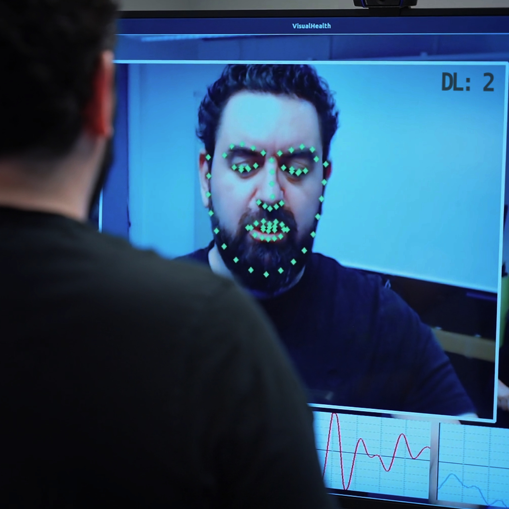
Building Sensing-to-Semantics (SEN2SEM) architectures that transform multimodal sensory streams into interpretable, context-aware indicators — closing the empathy gap in AI systems deployed in healthcare, education, and human–machine interaction.
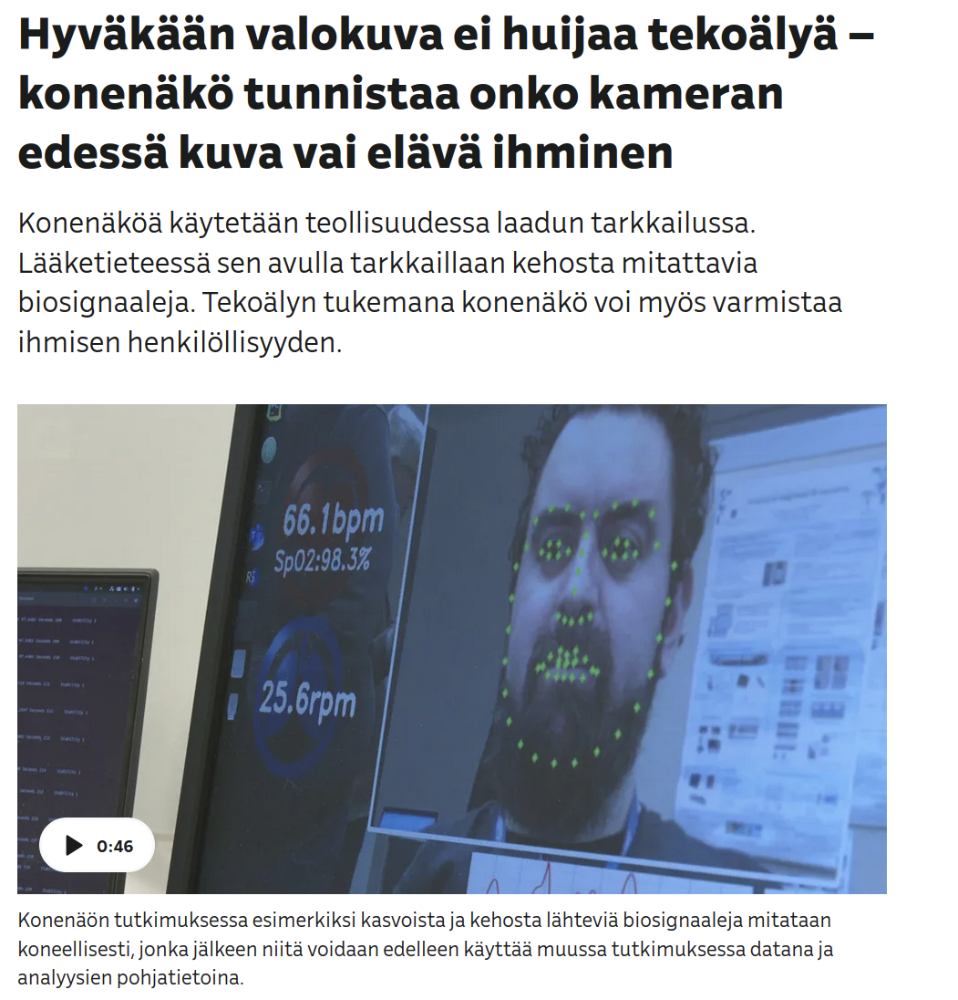
Non-contact extraction of vital signs and biosignals from video. rPPG, heart rate, respiration, HRV, and depression recognition under compression artifacts, network latency, and real-world conditions.
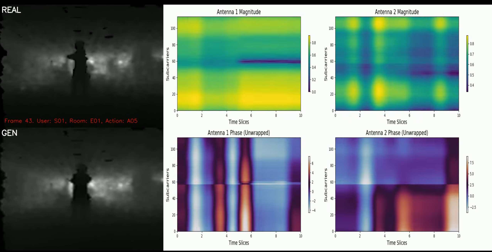
Privacy-aware spatial perception using WiFi CSI, mmWave radar, and UWB. CSI2Depth generates depth-like representations from WiFi channel state for indoor human monitoring without cameras.
Watch CSI2Depth demo ↗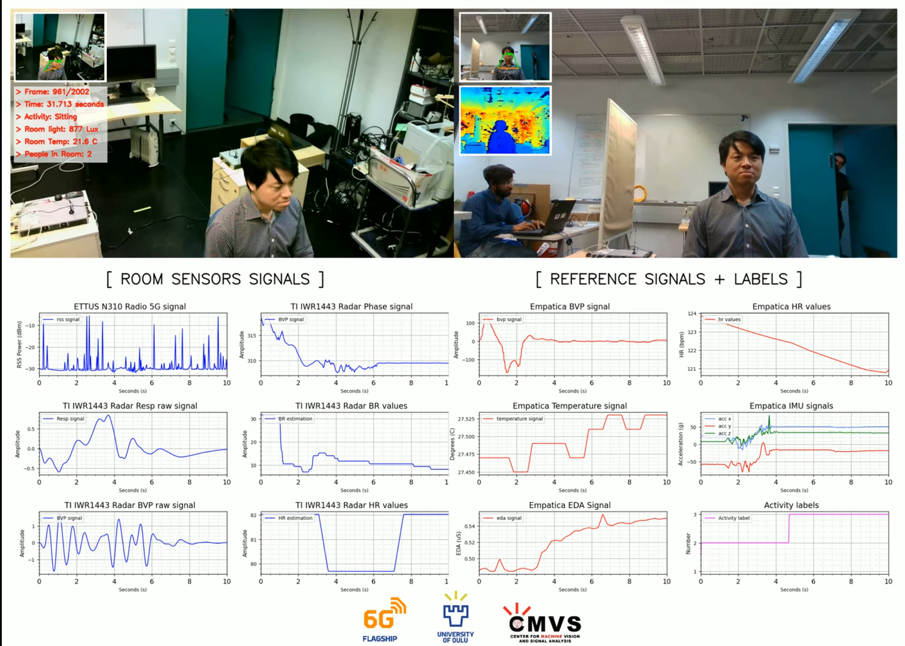
Self-supervised frameworks for fusing heterogeneous modalities in a shared latent space. Supports missing data, asynchronous sensing, and domain shift across RGB, thermal, depth, audio, and wearables.
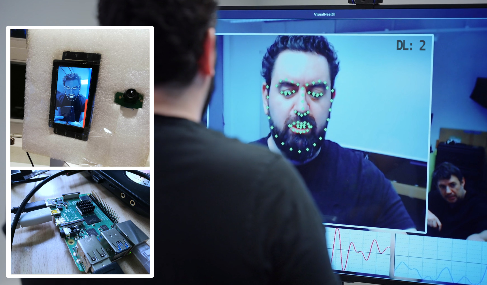
Design principles for interpretable, energy-efficient IoT deployments for remote health monitoring — modularity, calibrated uncertainty, Bayesian inference, and neuro-symbolic reasoning traces.
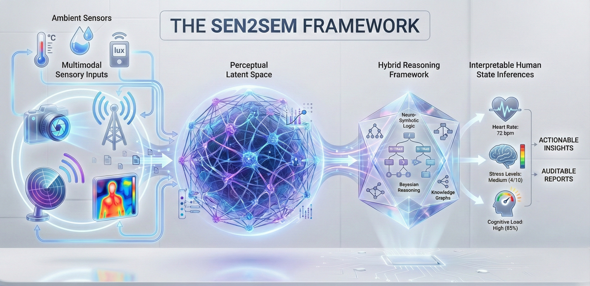
As of April 15, 2026: 45 scientific articles (39 peer-reviewed: 10 journal + 29 conference) and 2 books/chapters.
// Full list on Google Scholar
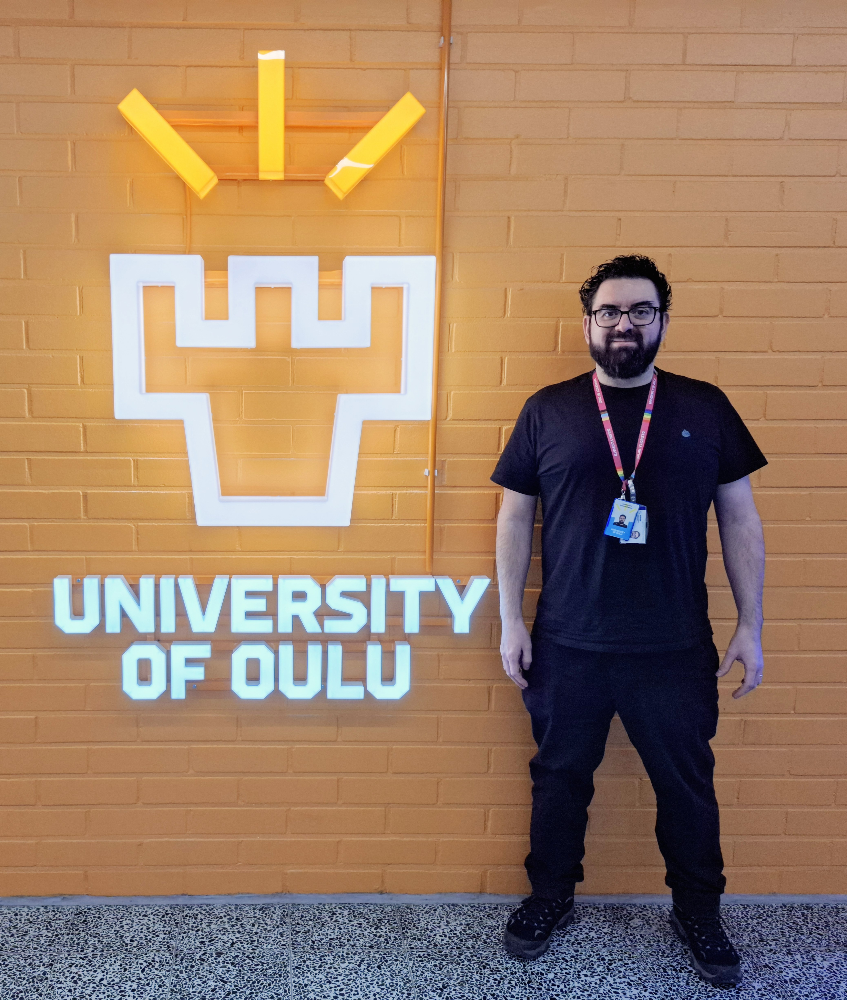
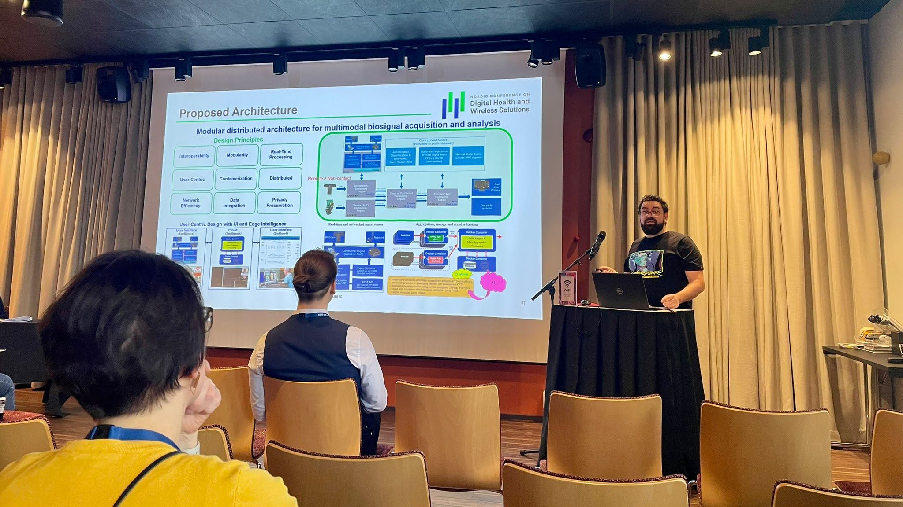

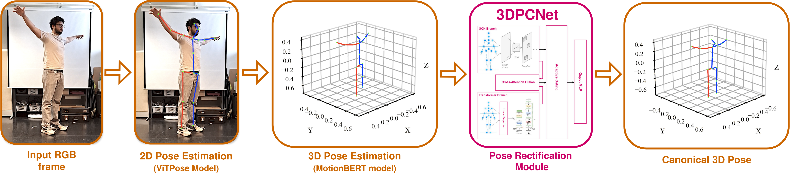
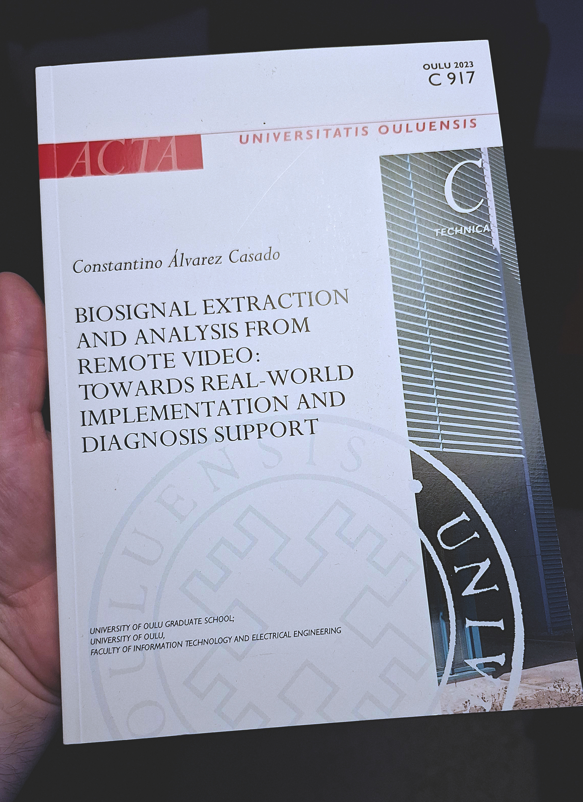
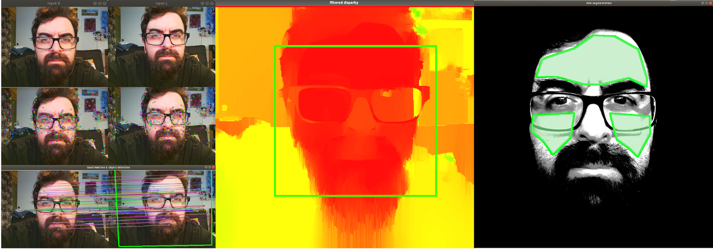
My teaching combines constructive alignment, hands-on implementation, and reproducible evaluation practice. I focus on helping students move from theory to validated engineering decisions in AI, signal processing, and software-intensive systems.
I emphasize transparent reasoning, testable claims, and clear communication of limitations so students can defend technical choices, not only produce outputs.
Course teacher in Digital Filters (Spring 2024–2026, ~120 students per term), with exercise design, Moodle workflows, and support. Co-responsible teacher role in Machine Learning starts Spring 2027.
Since 2022, I have supervised or co-supervised 14+ bachelor and master theses and currently act as technical advisor or co-supervisor for two doctoral researchers.
I am completing the 25 ECTS University Pedagogy programme at the University of Oulu and integrate responsible AI-tool use, reproducibility, and inclusive course design into teaching practice.
Open to collaborations in multimodal sensing, health AI, and human-centric machine learning. Reach out to discuss research, joint projects, or speaking invitations.
constantino.alvarezcasado@oulu.fi